Simple - Multipurpose Template
Bootstrap Based Multipurpose Template
Wrapbootstrap exclusive
(Please share and support us. Thank you.)
Getting Started #back to top
We created this template with Bootstrap Framework. We highly recommend you tu visit its website and learn more about to bootstrap components and plugins. You can find this template only on the Wrapbootstrap marketplace and we provide free updates and support for buyers.
Some Examples of Bootstrap Grid System
YOUR CODES GOES HERE
Our you can use the grid system with 2 columns like this;
YOUR CODES GOES HEREYOUR CODES GOES HERE
Our you can use the grid system with 3 columns like this;
YOUR CODES GOES HEREYOUR CODES GOES HEREYOUR CODES GOES HERE
Node & Npm #back to top
Go to Node website and install node js. Npm comes with node so you don't have to install it separately.
After the installation, Go to your project folder and run npm install to install project's dependencies. This command will install the packages listed in the package.json. See below:
"devDependencies": {
"browser-sync": "^2.14.3",
"gulp": "^3.9.1",
"gulp-autoprefixer": "^3.1.1",
"gulp-concat": "^2.6.1",
"gulp-cssmin": "^0.1.7",
"gulp-htmlmin": "^3.0.0",
"gulp-imagemin": "^3.1.1",
"gulp-load-plugins": "^1.4.0",
"gulp-order": "^1.1.1",
"gulp-rename": "^1.2.2",
"gulp-rtlcss": "^1.0.0",
"gulp-sass": "^2.3.2",
"gulp-uglify": "^2.0.0"
}
After installing these packages see the gulp section below to understand about gulp and tasks for our project.
If you don't want use SASS or any other packages you can just ignore these steps and make changes style.css and etc... Node gulp and etc.. are here just to make your work easier and fun :)
Gulp #back to top
Install Gulp
After installing Node you need to install gulp. We used gulp to automate our workflow. For example we used gulp-sass to conver our SASS files to CSS. Install Gulp
Open your bash and run the command below To instal gulp cli npm install --global gulp-cli These are the task you can use gulp-build - This will concat all the css and js files in css/plugins and js/plugins folder and give you plugin.css, plugins.min.css, plugins.js and plugins.min.js files. This will create the plugins file for your project. gulp-css - This will concat all the css files in css/plugins folder and give you plugin.css and plugins.min.css files gulp-js - This will concat all the js files in js/plugins folder and give you plugin.js and plugins.min.js files gulp-sass - This will convert your sass files to style.css file gulp-sassHome - This will convert your sass/homepages files to css/homepages files gulp-skins - This will create theme skin files. Based on the 2 color variables. this will convert sass/theme-skins sass files to css/theme-skins files. gulp-imagemin - This task help you to optimize all your images in the images folder. gulp-htmlmin - This minify all of your html codes in the html file. Please backup all your html files if you wnat to use this task. gulp (Default) - This task will create sync a local server and watch all your sass files and convert them to style.css file when the sass file changes and will also reload your browser. (localhost:3000/simple/) You can change simple(folder name) with yours in the gulpfile.js
Html Files & Structure #back to top
All Html codes are tested and validated. There are no HTML errors. Mostly there 3 main parts in our HTML pages. Header + Main + Footer section.
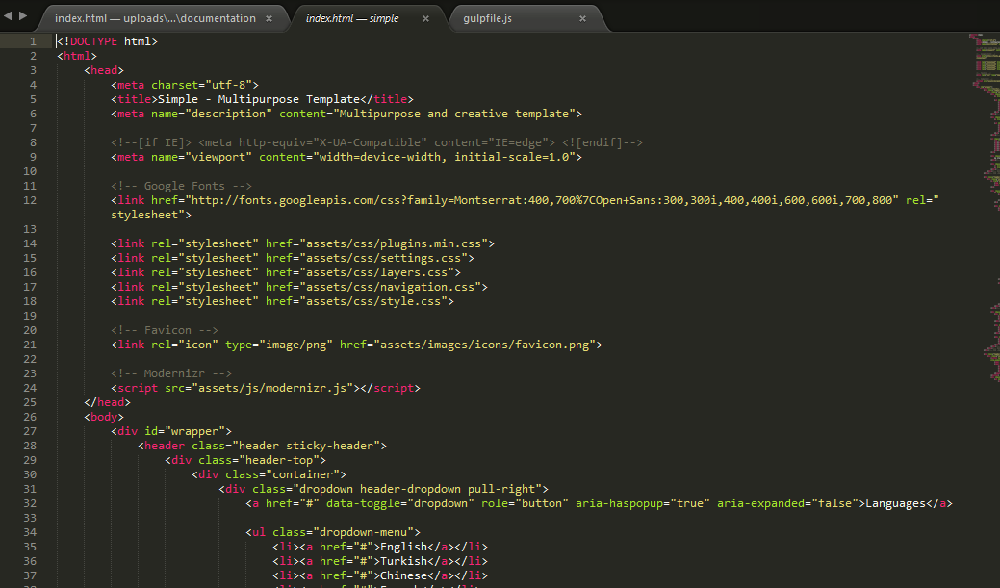
How to change layout to boxed or boxed-long?
Open HTML page, and fide the element with the wrapper id. And add class .boxed or .boxed-long to change layout.
And you can change the background color with CSS/SCSS. For Sass you need to open _variable.scss and change $body-bg-color: variable. With pure CSS just open style.css and find the body tag ad change background-color with yours.
// Change this --- Content here// To This for boxed layout (top - bottom margin) --- Content here// To This for boxed long layout (No top - bottom margin) --- Content here
Css Files #back to top
All css file used in all pages are listed in the plugins folder. These files combined with gulp and gulp created plugins.css and plugins.min.css files. We are using plugins.min.css file in all pages instead of all those plugins. You can delete plugins folder in production. This is the beauty using gulp in development.
Style.css file is our main css file. If you don't know how to use SASS or don't need to use it, you can make your changes in style.css file. This file is also well commented and coded.
layer.css - navigation.css and settings.css files are related to the Revolution plugin. You can change slider related styles in those files. For more see revolution slider's documentation.
Example: How to change color scheme in style.css file?
Open style.css file in your text editor. Use CTRL/Command + H shortcuts to open find and replace. And change #0069b0 this code with your first color and change #c00f3c with your second color. But don't forget always using sass is always better and easier :)
Or you can use theme-skins files for a new color scheme
There are 20+ predefind color schemes in this template. You can easly create one of your own with sass or creating a new skin file in the theme-skins folder and replacing the colors with yours.
SASS(Scss) Files #back to top
If you want to use Scss files, please see the structure image. All Scss files all well commented and coded. Common elements are in the elements folder.
You change some predefined styles in the _variables_scss file. For example if you want to color scheme all you need to change is $first-color and $second-color varaibles. This will change the color scheme with your colors. See below:
/////////* Simple Variables *//////////// $font-family: 'Open Sans', Arial, sans-serif; $second-font-family: 'Montserrat', Arial, sans-serif; // Body $body-text-color: #323232; $body-font-size: 13px; $body-line-height: 1.7; $body-bg-color: #9a9a9a; // You will see this only boxed or boxed-long layout $heading-color: #222; // Wrapper elem for body $wrapper-bg-color: #fff; // Background color for content $dark: #171717; $darker: #101010; $dark-bg: #171717; $darker-bg: #101010; $lightgray:#f8f8f8; $gray: #f0f0f0; $gray2: #e1e1e1; // Color Scheme // first 0069b0 // second c00f3c $first-color: #0069b0; $second-color: #c00f3c; // Media Queries // (Max - Min Media Queries - All related to the Bootstrap) // Max Media Queries $maxmqxss: 360px; $maxmqxs: 480px; $maxmqsm: 767px; $maxmqmd: 991px; $maxmqlg: 1199px; // Min Media Queries $minmqxs: 481px; $minmqsm: 768px; $minmqmd: 992px; $minmqlg: 1200px; $minmqxlg: 1600px;
All other pages are seperated. For example if you want to change something on about.html page. You can find related code in the _about.scss file or for blog pages _blog.scss and etc...
How to add color scheme!
Create a new file in the sass/theme-skins folder. And copy one of the predefined color scheme files(for example: blue.scss) And change the first-color and second-color variables with yours. See Below:
/* Simple Theme Skin Name: Blue First-color: #2196F3 Second-color: #FDD835 */ @import '../variables'; @import '../mixins'; $first-color: #2196F3; // Change this with your first color $second-color: #FDD835; // Change this with your Second color @import 'skin';
After making the color changes save it as a new file and include it in your HTML files after all other css files. See below:
Sass folder structure
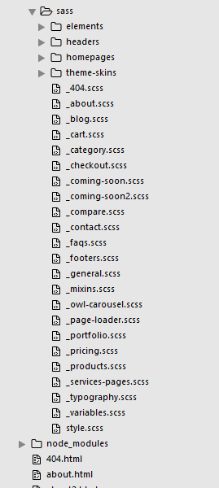Javascript Files #back to top
All common used plugins are in the plugins folder. Those plugins are combined with gulp and not to use more http requests we created plugins.js and plugins.min.js files. In html files, we are using plugins.min.js file instead of all those files. If you won't use gulp, you can even delete this folder. We got all plugins in the plugins.min.js file now.
Main.js file is template's main.js file. Please if you don't know what you are doing, don't edit this file. One js error could affect other plugins.
Please do not delete modernizr plugin. This plugin is very important to detect touch events and etc.. This is really important for menu to work properly.
Caution: Twitter feed and particles plugin (index-creative.html) won't work if you are not using a local server(xamp, wamp etc...) or a web server.
Twitter Feed
- Step 1: Go to Twitter Dev Page. ( You must sign in)
- Step 2: Click to the Create a new application button.
- Step 3: Fill the inputs and then click to the Create your Twitter application button.
- Step 4: Now you will see a page like this.

- Step 5: Scroll down and Click to the Create my access token button. ( Click couple of times until you see created information box )
- Step 6: Now you will see a page like this.

- Step 7: Open Ona Template folder, open js folder and then twitter folder. Open index.php file with any text editor. And Scroll down find these variables. Starts about 25. lines... And change its values with your new created keys.
// Your Twitter App Consumer Key private $consumer_key = 'CONSUMER_KEY'; // Your Twitter App Consumer Secret private $consumer_secret = 'CONSUMER_SECRET'; // Your Twitter App Access Token private $user_token = 'ACCESS_TOKEN'; // Your Twitter App Access Token Secret private $user_secret = 'ACCESS_TOKEN_SECRET';
- Step 8: After changing keys. Go back to js folder. And open main.js file with your text editor.
- Step 9: Find Twitter Feed Plugin section and change query with whatever you want search from Twitter.
- Step 10: Done... Refresh your page enjoy :)
For twitter plugin change username: 'username' [username] with your username. If you don't want to get a specific person tweets, you can use "query" instead of [username].
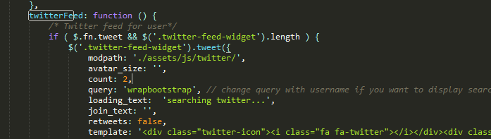Google Map
You can change related coordinates at the end of the main.js file. Open main.js file with your editor and scroll down to see map related code. You can add multiple markers in location array.
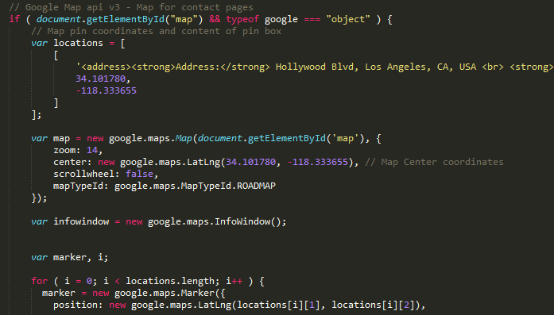Main.js file is well commentend all names are related to what they do. Please feel free to contact us if you have any problems. And please check your browser's console and make sure that you don't have any errors.
Instagram Feed
In June, Instagram updated their API and you can only get your own feed. In this section I'll help you get an accessToken to use instagram feed plugin. spectragram.min.js (Plugin)
Caution: Please follow the steps and get your own access token. It is always best to not share and use another API.
Step1: Go to instagram main page and log in to your account.
The account you want to get images.
Step2: Scroll down to the bottom of the page and go to API Page.
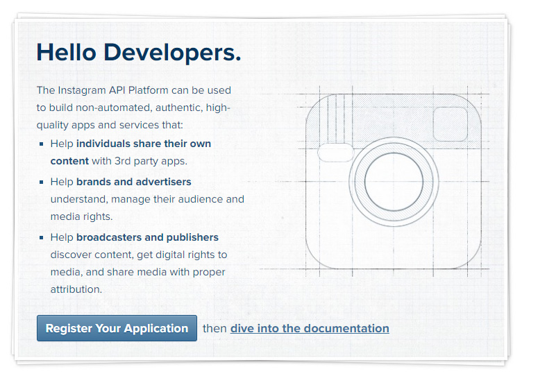Click the register your application button.
Step3: Fill the Developer Singup Form and click the signup button.
Step4: Go to Manage Clients, and hit ‘Register a New Client’ to register and gain API access

Step5: Go to instagram main page and log in to your account.
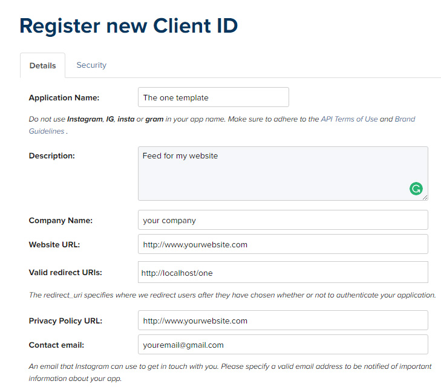Fill the inputs with your informations and click the button register.
Step6: Not we have a clint ID.
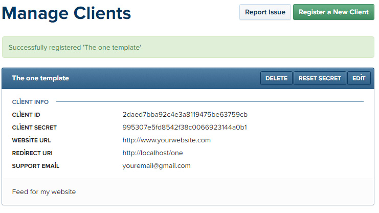Fill the inputs with your informations and click the button register.
Step6: Click the edit button to Configure Client
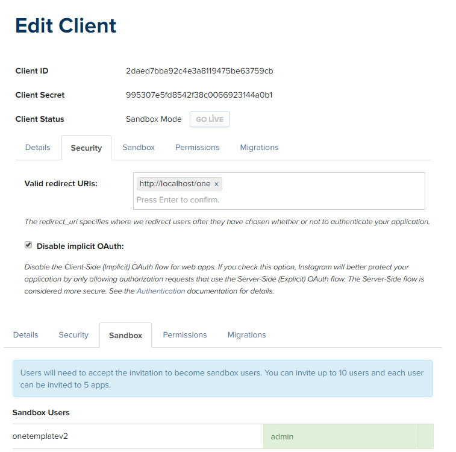Click ‘Edit’ on your app from the Manage Clients screen, then open the ‘Security’ tab and uncheck the ‘Disable Implicit OAuth’ since we’d like the public to be able to see our feed.
And go to 'Sandbox' tab and make sure that you are admin.
Step7: Use this API URL in a browser
Click the link below, new tab will open. And change click_id and redirect_uri values with yours and go to that page and click the authorize button to give the permission.
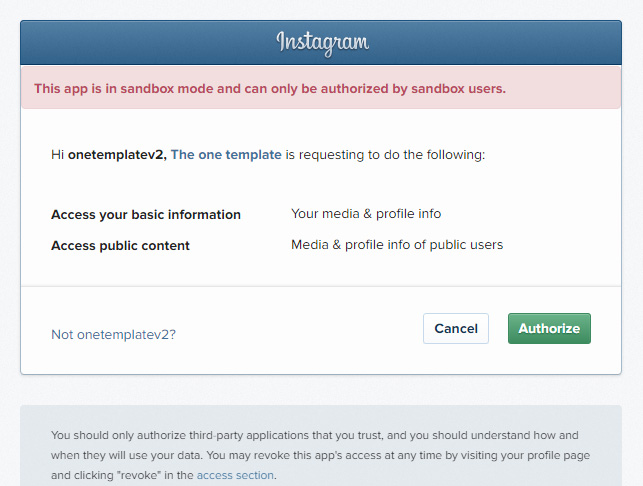Step8: Get the access token and use it.
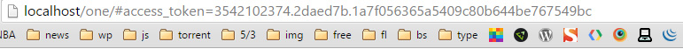After you clicked the authorize button, you will redirected to the your redirect uri page and it will give you the accesss_token value on the browser address bar.
After getting this access token go to main.js file and find the code below and change the 'accessToken' and 'clientID' values with yours. And change the 'query' with your username.
Please get your onw API Key to use instagram feed plugin. This is just for the showcase.
instagramFeed: function () {
// Instagram Feed
if ( $.fn.spectragram && $('#instafeed').length) {
jQuery.fn.spectragram.accessData = {
accessToken: '2229187323.566f1cf.c41eaca370664379b822dc3b17bb1464', // CHANGE WITH YOUR ACCESSTOKEN
clientID: '7c28e44736494357ba3df343b1c699fe' // CHANGE WITH YOUR CLIENT ID
};
jQuery('#instafeed').spectragram('getUserFeed',{
query: 'eonythemes',
max: 13,
size: 'medium',
wrapEachWith: '',
complete: function() {
----
}
});
}
},
Contact Form
How to use conract form?
You need a server to make it work, it should work even on a local server. How to make it work: First you need to open php/mail.php file with your text editor. And change placeholder informations with your informations. Plese see image below to learn how.
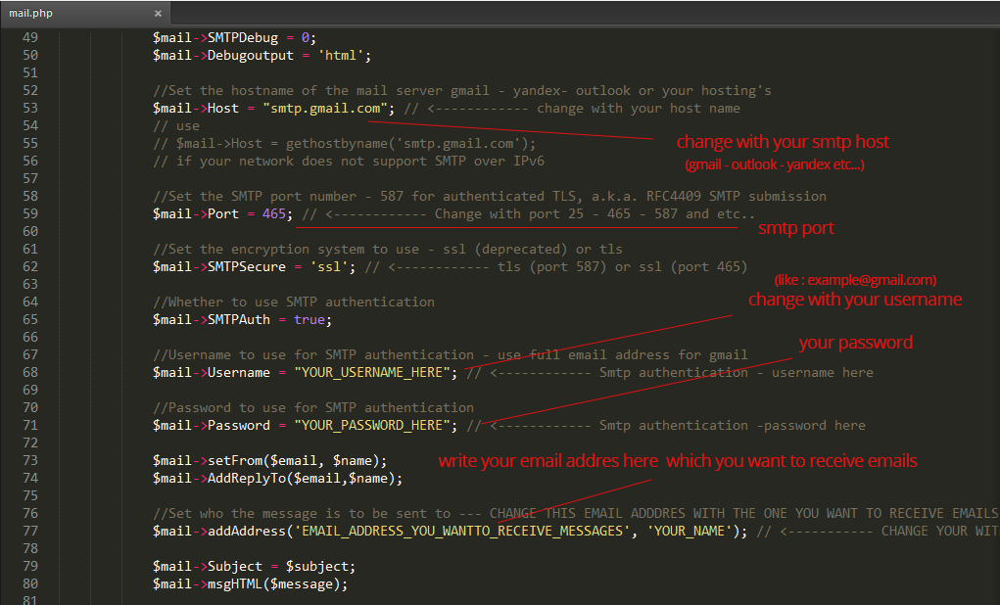If you want to use a gmail smtp server like i do, you just need to change Username and password with your gmail username and password.
Caution:If you have a problem with gmail settings, please make sure to go this page and find out what you need to change.
How to change error messages or translate?
To change error messages you need to open js/contact.js file with your text editor and make the changes you want.
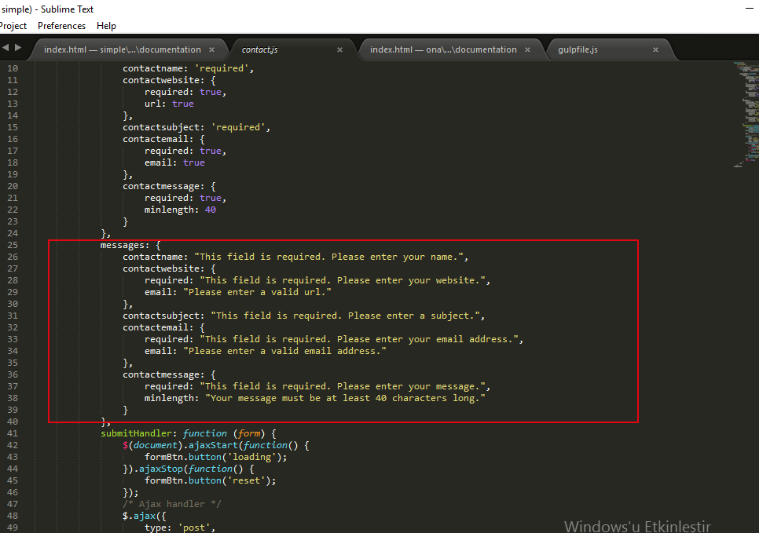name - website- subject - email - message inputs are required. lastname input and checkbox are not. If you want to change required inputs please visit jquery.validate plugins documentation on their website. It is really easy to understand and change. You just need to change some variables in contact.js file
If you have any problem, please feel free to contact me.
Credits #back to top
These are the used plugins/extensions in this template. If you want to learn more about these plugins please visit their website and help them.
- 1. Bootstrap
- 2. jQuery
- 3. Node & Npm & Gulp - In development
- 4. Fontawesome
- 5. Owl carousel 2
- 6. Light Gallery Plugin
- 7. Revolution Slider (with Extendend License)
- 8. Animate Css
- 9. Twitter Plugin http://tweet.seaofclouds.com/
- 10. Modernizr
- 12. Isotope Plugin (Developer License)
- 13. Fitvids.js
- 14. Waypoints plugin
- 15. Wow.js plugin
- 16. Retina.js plugin
- 17. Countto jquery plugin
- 18. Hoverintent plugin
- 19. Debouncedresize plugin
- 20. Fotoroma plugin
- 21. Multiscroll - Fullpage jQuery Plugins
- 22. Pagepilling Plugin
- 23. Morhtext.js Plugin
- 24. jquery.validate.js Plugin
- 25. Php Mailler
- 26. Backstrecth plugin
- 27. jquery.countdown.js Plugin
- 28. Spectragram Plugin
- 29. jquery kwicks Plugin
- 29. Typed Plugin
- 30. All images are purchased from fotolia and shutterstock. They are not included with the download file.
Changelog #back to top
In these section you will details about the release date updates. What changed with which update and etc..
Update Date: 16/01/2017 Version: 1.1 Changes: + Deleted nice scroll plugin (Plugin wasn't working right with touch devices - Instead we are using original scroll bar for side-menu and coming-soon page) Just changed some css and js code. (main.js file - coming-soon.js file and plugins.js - plugins.min.js files) + Fixed Header5(Side) flickr problem for internet explorer and edge
Release Date: 1/01/2017 Version: 1.0